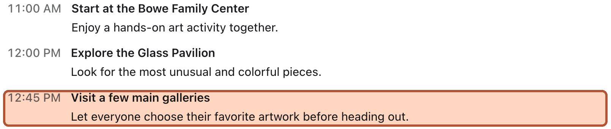
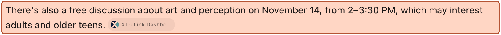
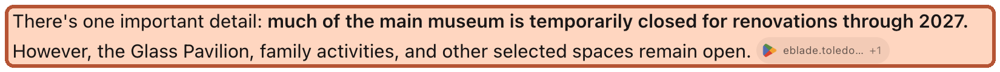
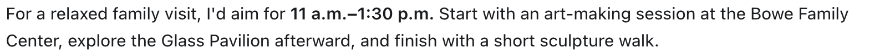
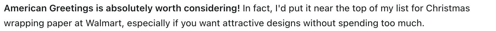
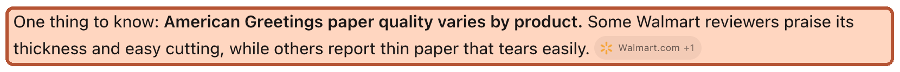
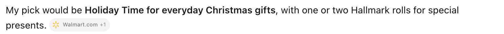

great lakes ai week · november 12, 2026
The brand identity you’re up against
How AI decides who your brand is, and how to have more of a say in it
Laura Seelinger · Founder, LSX Partners
quick show of hands
Have you ever gotten an answer from ChatGPT that was annoyingly wrong?
Sources: ChatGPT, Nov 10, 2026 · Toledo Museum of Art


The plan cited XTruLink, missing the main galleries closure.
ASKED
“I’m looking for a family friendly activity this Saturday - what about the Toledo Museum of Art?”
ASKED AGAIN
Same question, same engine, minutes later


This time it caught the closure with a Toledo Blade citation.
ChatGPT, Nov 10, 2026
Getting recommended is half of it.
The other half is what AI says about you.
Has your brand changed? New ingredients, new products or pricing, acquisitions, addresses...
ChatGPT, Nov 10, 2026
Let’s see how American Greetings holds up in a search…
ASK 2 “What about American Greetings?”


ASK 1 “What brand of wrapping paper at Walmart should I get for this holiday season?”

part one
Where AI gets its information
where ai gets it
6%
of what AI cites comes from the brand’s own site
87%
comes from third-party sources*
*The remaining 7% comes from competitors’ sites.
Source: Scrunch Labs, Citation Dynamics, 2026
my own reports
How much of what AI cited came from each brand’s own site
National professional services firm
1.5%
National home-hardware brand
1.5%
Med tech client
4.2%
In four months, site citation increased 2.5x & SoV nearly doubled
Sources: my prompt audit and Spyglasses reports, 2026
my own reports
How much of what AI cited came from each brand’s own site
National professional services firm
1.5%
National home-hardware brand
1.5%
Med tech client
4.2%
In four months, site citation increased 2.5x & SoV nearly doubled
Sources: my prompt audit and Spyglasses reports and nightly tracking, 2026
where ai reads about you
Because most citations are third-party sources
Community forums
Reddit, Quora and niche boards
Product reviews
Retailer reviews, review sites and complaint sites
Retailer listings
Product pages on Amazon, Walmart and Target
Press and news
Old press releases and the coverage they created
Partner pages
Distributors, resellers and integrations
Directories
Listings, app stores and profiles
YouTube
Reviews, how-tos and comparisons
Roundups
“Best of” lists and comparisons
Competitors
Their spec sheets and claims about you
part two
Let’s test it
live test
Has your brand changed something in the last year?
An ingredient, a schedule, a price, a location, a name
What I’ll ask AI, without your name
- “What’s the best [what you sell] in [your city]?”
- “Who in [your city] offers [your new product, service or hours]?”
- “Which [category] should I pick if I need [the problem you solve]?”
That doesn’t mean your brand is SOL
It means you need to expand your content boundaries.
from client work
AI started leaving out how my med tech client’s product works
Detected
69 → 61
AI dropped the treatment device and the steps
Adjusted
- Quotable FAQ on the how-it-works page
- Advocates describe the full system
Next report
61 → 68
AI named the device and the steps again
Source: Spyglasses, July 2026 report
part three
Which sources matter for you
by brand type
Where AI reads about different kinds of brands
B2B
- Trade press
- Software and agency review sites (G2, Clutch)
- LinkedIn posts and comments
- Partner and integration pages
- Conference agendas
- Customer case studies
B2C
- Retailer listings and reviews
- Reddit and forums
- Review sites
- YouTube reviews
- “Best of” roundups
- App stores
Local and destination
- Google Business Profile
- TripAdvisor and Yelp
- Reddit and local forums
- “Things to do” roundups
- Visitor bureau pages and local news
- Booking and venue directories
so how do you know?
Buyers don’t search in four words anymore. They describe their situation.
“I own a couple of rentals in Denver and a tenant just told me the roof leaks, but only in heavy rain. Who can fix it fast, and do I need a whole new roof?”
A landlord with a leak, describing the problem in their own words.
How do you find the questions your buyers are asking, so you’re in the answer and in it accurately?
corpuswave
The process behind every audit I run
01
Audience intelligence
The questions and words your buyers actually use
02
Prompt list
What AI gets asked
03
Prompt audit
Who AI cites for each
04
AI visibility baseline
How often AI cites you, and what it says
Step 1 is free at corpuswave.com.
the ai intelligence loop
AI visibility without audience intelligence is guessing
01
Audience Intelligence
02
Strategic Translation
03
Content Activation
04
AI Visibility Monitoring
What the monitoring finds goes back into the research, and the loop starts again.
Laura Seelinger
Founder, LSX Partners · lsxpartners.com
linkedin.com/in/lseelinger
Corpuswave
Audience intelligence guide — free
Prompt audit & baseline beta guide — spots limited
TikTok
@LauraDoesAISearch